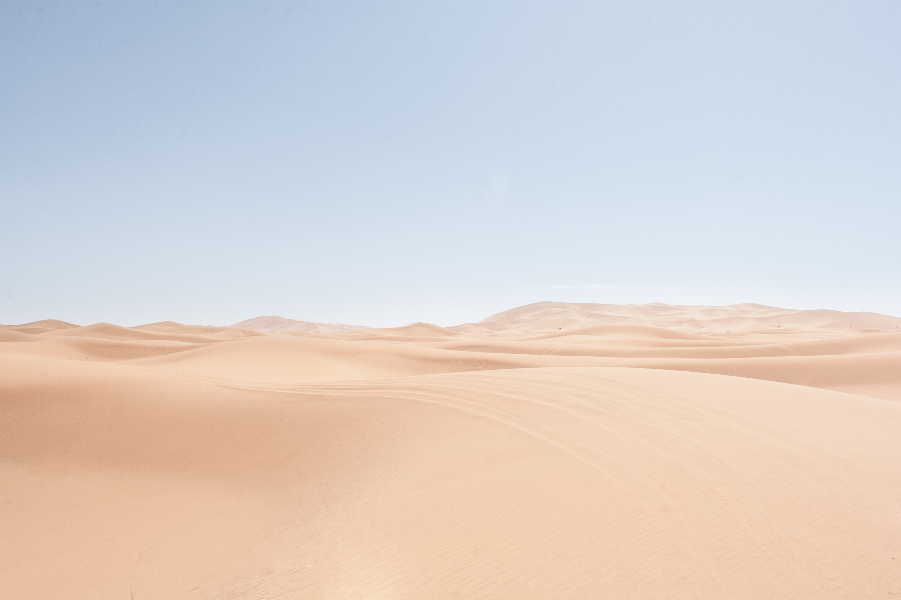

Здесь должен был быть красивый заголовок новости
А тут красочное краткое описание событий, но не задалось)
Новости
Главные новости
А тут красочное краткое описание событий, но не задалось)
Госдеп США обвинил Иран в хакерской атаке на тамагочи модели KS-63, находящегося в Музее архаичной техники в Сакраменто, Калифорния. Высвечивающийся на экране устройства призыв немедленно снять санкции с Ирана, смотрители заведения заметили спустя месяц поле взлома.
Неизвестная группа лиц занимается похищением и продажей слонов. С места событий наш корреспондент.